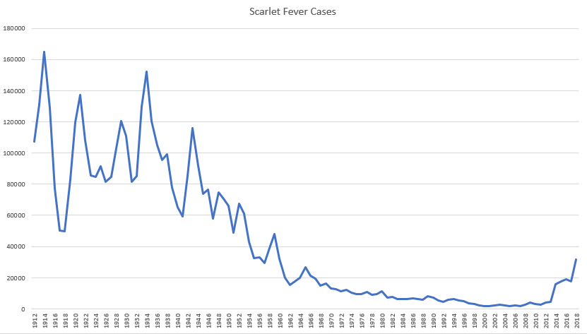
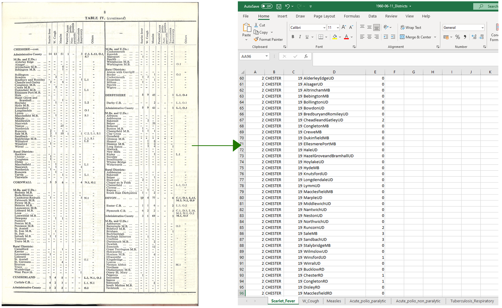
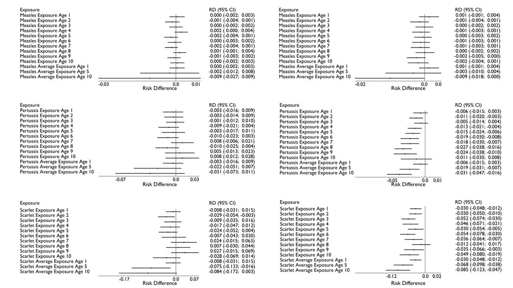
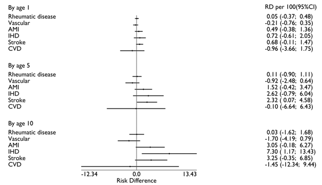

Investigating the long-term consequences of early life infection in later life
Samuel Baker
Supervised by: Stephanie von Hinke, Neil Davies, Frank Windmeijer, and Tim Frayling
Why?
The brief
The Developmental Origins of Health and Disease (DOHaD) hypothesis (you can read a review about it here) suggests that early life circumstances can have long lasting and potentially irreversible effects on one's health and well being in older age. One such circumstance is exposures to disease, were we already know that pathways exist, yet this remains and understudied topic mostly due to lack of long term data on disease exposure
Examples
The data
What currently exists?
Currently some of the only data available is from public health england when looking historically, which only gives the total values for the whole of england and wales annually, making it fairly useless for investigating individual level exposures. Its also annual, which given many disease have seasons and strong time trends, makes it difficult to investigating within year effects.
The solution: -> Digitisation of 44,000 tables of disease data
Weekly data exists, but has never been digitised, and of the shelf software just wouldn't work given the level of work required, with the cost of manually transcribing this data costing 10's of thousands of pounds. By using open computer vision and python, a new software package called ArchiveOCR was programmed to handel this task. Using it, we where to digitise the core parts of these tables to around a 99.4% accuracy to give us detailed data on disease exposure from 1941-74. Archive OCR isn't yet release to the public, as its unfinished and hard to use. However, one day it will be release and that will be its own contribution.
Weekly disease data
Using this data gives use access to weekly data (aggregated into months in the video below for the sake of render times...) across a broad part of the 20th century for multiple notifiable diseases. This allows us to investigate a broad range of questions, but also perseveres detailed information at risk of being lost due to damage and decay
Weighting the data
Districts change over time, and this can lead to difficulties when trying to investigated within district estimations over time. To solve this, weightGIS was developed to standardise places over time. Given most of the data that we will be using in our analysis is from the UK Biobank, we standardise the data to the 1951 census giving 1472 districts. We then linked each individual in the UK Biobank to these districts based on the year and month of their birth, but also to all other geographic levels for future data mergers

What has the data been used for
Three example papers where i am the first author where this data has been used
Asthma instance and early life infection
Whilst the hygiene hypothesis has long since been disprove, with the inverse relation between declining disease cases and increasing atopic disease now being found to be a very complex relationship from multiple changing environments. However, diseases environments changes significantly and many papers disproving their contribution do not consider genetics. Given atopic diseases are highly heritable, it is possible that the impact of early life infection may change later life outcomes conditional on their genetic endowment. Here we generalise infection rates to individuals in the UK Biobank based on their districts of birth as the exposure and investigated there impact on asthma. Preliminary results show that whilst when simply looking at the impact of early life infection on asthma there are inconstant results or none as par the literature currently, when interacting with an individuals polygenic score for asthma scarlet fever and pertussis exposures in early life are association with reduced asthma instance later in life.
Risk difference associations of an additional case of regional incidence of exposure rate by age per 100 individuals (LEFT) and their interplay with the PGS for asthma-on-asthma instance  (RIGHT)
Long Term consequences of Scarlet Fever
Streptococcus pyogenes has multiple disease outcomes, many of which have currently established long term consequences from childhood infections. Acute rheumatic fever leads to rheumatic heart disease, and the ASO anti-body response from infection has been linked to later life Crohns disease, narcolepsy, henoch-schoen purural, psoriasis and PANDAS. Most of these studies however use very small samples, where as we generalise infection rates of scarlet fever as the underlying prevalence of S. Pyogenes based on the district of birth of the UK Biobank individuals. Here we focus on cardiovascular health, given the prior known abdications with rhumatic heart disease. We find associations of increased exposures to scarlet fever on increase levels of heart disease.
Risk difference associations of an additional case of regional incidence of scarlet fever by age per 100 individuals on heart outcomes
GWAS on notifiable diseases
Many diseases, espically childhood diseases, have recived little attention in GWAS studies. This is mostly due to a lack of data, one of the only GWAS on notifiable disease uses self reported data from 23andMe(Tian et al 2017). An alternative is to generalise infection exposure from generalise infection rates to individuals in the UK Biobank based on their districts of birth. Preliminary results of measles finds a similar results as Tian et al (2017) with no significant hits, if expand and validated this could represet an affordable way to investigate a first stage of diseases.